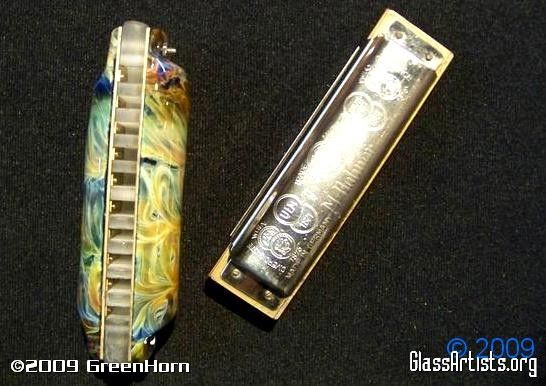
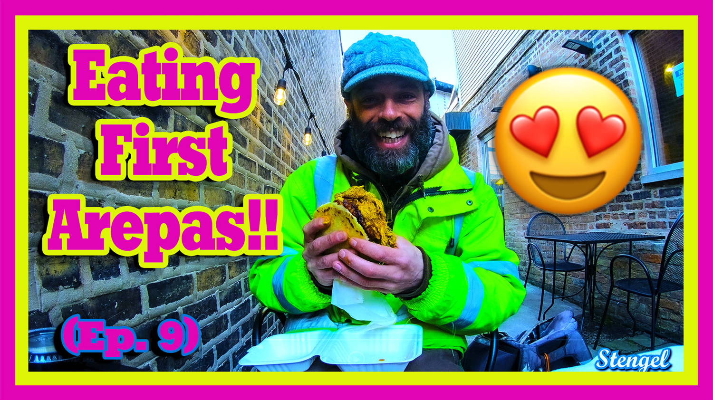
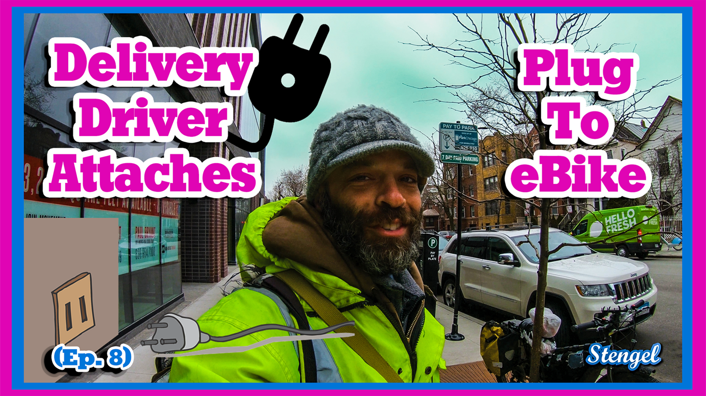
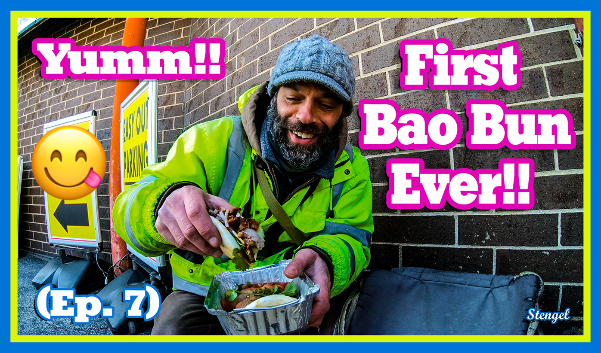
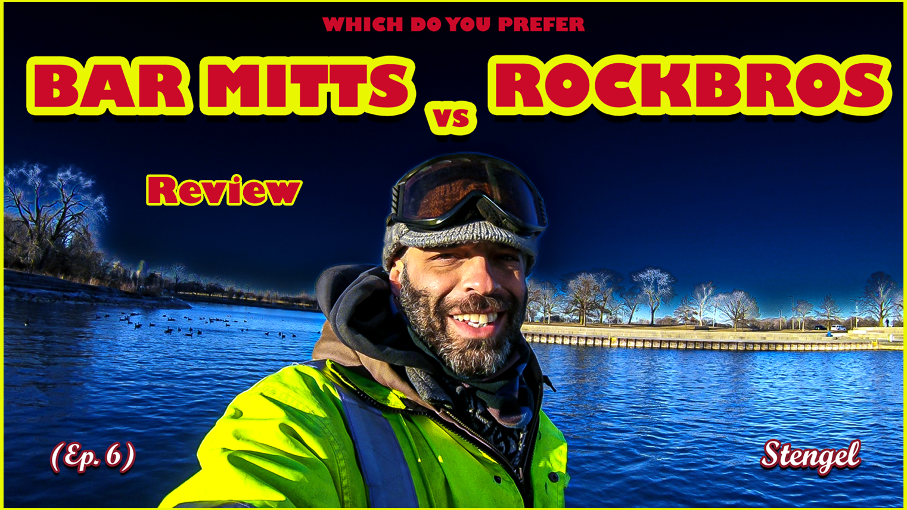

Welcome Back!!
Bee Boppin Around
 hello World Welcome Back to the new website. It was down for a bit & wanted to write a blog to update on projects!!
Basically been in Chicago the last few yrs doing bike stuff, blowing Glass, working deliveries, learning to code, web design, 3D, & Crypto etc.. kinda was trying to build some skills so when on the road, or livin the nomad lifestyle, have some income coming in. At times it's touchy to setup the glassblowing bench in certain areas, as we've seen in previous yrs or episodes. so my thought was gain some skills in other areas that would still benefit the art & music thing that had going on over the yrs & still involving bikes, Trucks & adventures. Giving the freedom that we desire. Sometimes we gotta adapt & evolve if that makes sense. Example, just made this website coding with the skills learned (it's not greatest but i made it tho lol)
So this site will be a good a hub for my Art, Music, Harmonicas, Bikes, Adventures, Tech & who knows!! but as creators, crafters & Artists we need our own platforms. It's kinda like having your own store but you dont have to have a physical location. Perfect!! Also we are now reaching even more people with the internet growing each day. (which could be a good thing or not so good thing) So who knows what things will grow into sometimes ideas go viral.
The Harmonica shop section on the site along with a few other musical accessories was something that i've wanted to keep going. Years ago people saw/heard me trying to be a travelling Harmonica Salesman lol. But having someone else do the shipping, inventory & all that now makes this a lot more feasible cause am usually living outta the truck or hammock.
To be transparent, when i was selling Harmonicas outta Eugene Glass Menagerie i still made the same profit a buck or 2 per Harp, it's not that much it's more love of passion than a desire to profit. So this opportunity really helps me be able to focus on the Harp info, selection things like that. Even tho it's a buck or two profit i appreciate ya picking up your Harps here, it helps keep everything going in the glass harmonica world & future projects. Which the Glass Diatonics is very much an expensive project (which is funded fully by geoff stengel no investors) I appreciate ya. So we got the Harp shop long story short🤓
Anyways Thank you for all the support, will probably add some more to this but wanted to at least say something to Y'all while building the site
~geoff stengel
Heres some links for my other projects, Youtube - Rarible - BitcoinDavida Crypto Site - Github - Also The links are on Home Page

Youtube Eps:
(Ep. 9) Eating First Arepas!!
(Ep. 8) Plug n Play eBike
(Ep. 7) Bao Buns
(Ep. 6) Bar Mitts Review
Lately been doin more Youtube videos to branch out, honestly cause i'm not the greatest at spelling & thought videos would be fun way to network with people. At first i didn't think was good at it when tried over the yrs. But as watching the videos & learning editing i seen so much improvement it's been a lot of fun. Also to, sometimes it even maybe uncomfortable, but i say rather do this & feel uncomfortable than deliver $1 coffees lol. You can view my earliest ones yrs ago in the playlist

Bitcoin Davida Crypto Info & Wallets:
One of the first sites i coded in 2016, possibly the Eugene Glass Menagerie site was before. anywho, over the yrs managed to have kept up with the site from time to time to keep it going, another project that with a bit of work here and there has grown into a nice place of knowledge.
The Directory (Links Page) has some of the best blockchain companies all together as if it was The Crypto Yellow pages from back in the day. It started from when i was getting into Bitcoin Atms and needed a website along with basically saying the same info over & over that figured maybe all that info could go together, the other inspirations was craigslist, at first the vision was the craigslist of crypto. who knows if that's still the idea lol, but i have palying the project and being involved in the crypto community.

Github GeoffStengel Profile:
Github is a place for Developers to share code & projects in an Opensource enviornment. This is an important section if your're intrested in getting a website from me in the future, github is where we will upload the code & have access to their servers from. So i wanted to have my profile available in a few spots so there's easy access for ya.